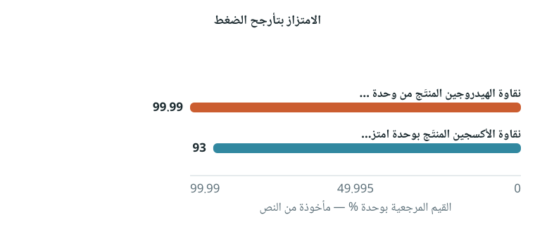

الامتزاز بتأرجح الضغط
Pressure-swing adsorption
فصل غازات بسرير مازّ يُحمَّل عند ضغط مرتفع ويُجدَّد بخفض الضغط لا بالحرارة؛ والسعة العاملة هي الفرق بين تحميلَي الضغطين، وهي التي تحدد إنتاجية الدورة.
الامتزاز بتأرجح الضغط عملية فصل غازات تعتمد على أن كمية الغاز الممتزّة على سطح المازّ تزداد بزيادة ضغطه الجزئي عند حرارة ثابتة. يُمرَّر الخليط على سرير مازّ عند ضغط مرتفع، فيُحتجز المكوّن الأشدّ امتزازًا ويمرّ الأضعف، ثم يُخفَّض ضغط السرير فينطلق المحتجز ويتجدّد المازّ للدورة التالية. الفرق بين التحميل عند الضغط المرتفع والتحميل عند الضغط المنخفض هو السعة العاملة، وهو الرقم الذي تُصمَّم عليه أبعاد السرير لا التحميل الكامل. ولأن التجديد بالضغط لا بالحرارة، تكون دورات العمل قصيرة والسرائر صغيرة، لكن جزءًا من الغاز المنتج يُستهلك في إعادة الضغط والغسل فلا يُسترد كله. والتطبيق الأوسع نطاقًا تنقية الهيدروجين، حيث تبلغ النقاوة 99.99 بالمئة وأكثر مع استرداد يتجاوز 90 بالمئة في وحدة متعددة السرائر، وتُستخدم العملية كذلك في إنتاج الأكسجين الطبي من الهواء بنقاوة 93 بالمئة.
كيف تعمل الظاهرة؟
الآلية تقوم على اعتماد كمية الغاز الممتزّة على ضغطه الجزئي عند حرارة ثابتة: رفع الضغط يرفع التحميل الاتزاني، وخفضه يخفضه. في خطوة الامتزاز يُغذّى السرير بالخليط عند ضغط مرتفع فيُحتجز المكوّن الأشدّ امتزازًا ويخرج الأضعف نقيًّا. ثم تُعادل السرائر ضغوطها لاسترداد طاقة الضغط، ويُخفَّض الضغط فينطلق المحتجز، ويُغسل السرير بجزء من المنتج، ثم يُعاد ضغطه. الدورة الكاملة ست خطوات أساسية: إعادة ضغط، تغذية عند ضغط مرتفع، تخفيض ضغط، انتزاز عند ضغط منخفض بغسل أو تفريغ، تعادل ضغط بين السرائر، وغسل بالمنتج الثقيل.
العلاقة بالأرقام
السعة العاملة هي الفرق بين التحميل الاتزاني عند ضغط الامتزاز والتحميل عند ضغط الانتزاز، وتُقاس بالمول أو الكيلوغرام لكل كيلوغرام مازّ؛ وهي أصغر بكثير من التحميل الاتزاني الكامل لأن السرير لا يُفرَّغ تمامًا في كل دورة. وتُقاس الإنتاجية بحاصل ضرب السعة العاملة في كتلة المازّ مقسومًا على زمن الدورة. عمليًّا: نقاوة هيدروجين 99.99 بالمئة وأكثر مع استرداد يتجاوز 90 بالمئة، ونسبة ضغط امتزاز إلى غسل لا تقل عن 7 لتعادل الضغط على ثلاث مراحل، ونقاوة أكسجين 93 ±3 بالمئة باستهلاك 1.2 كيلوواط ساعة لكل متر مكعب نظامي.
مفاهيم متقاربة
الفرق الجوهري عن الامتزاز بتأرجح الحرارة أن الطاقة تُصرف على ضغط الغاز لا على تسخين السرير وتبريده، فالدورة أسرع والسرير أصغر، لكن الضاغط يستهلك كهرباء. والفرق عن الامتزاز بتأرجح الضغط والتفريغ أن الأخير يمدّ الضغط المنخفض تحت الجوي بمضخة تفريغ فيضاف استهلاك كهربائي آخر. والفرق عن الامتصاص أن الفصل على سطح صلب مسامي لا في مذيب سائل، فلا مشكلة تآكل المذيب ولا فقدانه بالتبخّر. والفرق عن التقطير أن الفصل لا يعتمد على فرق نقطة الغليان، فيمكن فصل غازات متقاربة التطاير.
حدود التطبيق
العملية لا تعمل جيدًا إذا كان المكوّن المطلوب هو الأشدّ امتزازًا، لأن المنتج عندئذ يخرج في تيار الانتزاز الممزوج بحامل. والسعة العاملة تتقلّص إذا كان انتزاز المكوّن صعبًا عند الضغط المنخفض، كما في ثاني أكسيد الكربون على زيوليت 13X في ظروف الهواء المخلخل، فتنخفض الإنتاجية كثيرًا. وجزء من المنتج يُستهلك في إعادة الضغط والغسل، فالاسترداد أقل من 100 بالمئة دائمًا. والرطوبة والمركبات الثقيلة تُسمّم المازّ إن لم تُنزع قبل السرير. وأخيرًا: الأرقام المذكورة من وحدات صناعية ومن مواصفات معدات، لا من قياس أجريناه.

| الكمية | القيمة | المصدر |
|---|---|---|
| نقاوة الهيدروجين المنتَج من وحدة امتزاز بتأرجح الضغط متعددة السرائر | 99.99+ % | [2] |
| استرداد الهيدروجين في وحدة Polybed | >90 % | [2] |
| نسبة الضغط الدنيا لتعادل الضغط على ثلاث مراحل | 7 — | [2] |
| نقاوة الأكسجين المنتَج بوحدة امتزاز بتأرجح الضغط الطبية | 93 ±3 % | [3] |
| الطاقة النوعية لوحدة امتزاز بتأرجح الضغط التقليدية | 1.2 kWh/Nm3 | [3] |
المصادر
- 1 Bench-Scale Development and Testing of Rapid PSA for CO2 Capture (kickoff presentation) — U.S. Department of Energy — NETL (2012). www.netl.doe.gov/sites/default/files/2017-12/rapid-pressure-swing-adsorption-kickoff-july2012.pdf · اطُّلع عليه 2026-11-28
- 2 Review of Polybed pressure swing adsorption for hydrogen purification — International Journal of Hydrogen Energy (2022). www.pure.ed.ac.uk/ws/files/257847974/HE_D_21_05225R1.pdf · اطُّلع عليه 2026-11-28
- 3 Oxygen Generation and Storage: Pressure/Vacuum Swing Adsorption Plant — Technical overview — PATH / Clinton Health Access Initiative (2021). media.path.org/documents/O2_generation_and_storage_PSA_VSA_v1.pdf · اطُّلع عليه 2026-11-28
استشهد بهذا المصطلح
الصيغتان مبنيتان من بيانات الصفحة نفسها: العنوان والتاريخ ورابط النسخة المنشورة.
الامتزاز بتأرجح الضغط — Pressure-swing adsorption. (2026). ديوان المعرفة — انفراد. https://infiradev.com/diwan/terms/term-pressure-swing-adsorption.html
@misc{term-pressure-swing-adsorption2026,
title = {الامتزاز بتأرجح الضغط},
titleaddon = {Pressure-swing adsorption},
howpublished = {{ديوان المعرفة — انفراد} — مرجع علمي عربي},
year = {2026},
url = {https://infiradev.com/diwan/terms/term-pressure-swing-adsorption.html},
urldate = {2026-11-28},
note = {مراجعة علمية: Abdullah Al-Huwaidi}
}
راجعه: Abdullah Al-Huwaidi · 2026-11-28 · آخر تحديث 2026-11-28